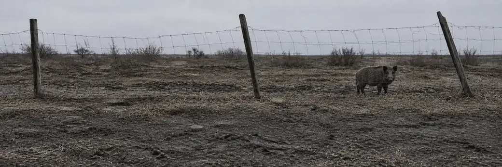

Nim is out after a boar

Within reach
Clean
alarm 1 of the 2 the bow allows
ground
2
/2
all of it
alarm
1
/3
it breaks off at 3
it is
feeding
then lifting
wind
across
nothing left to close
press
3
/5
then the light goes
worth
24
food
3
hide
2
sinew
bow allows 2 · coat −18%
Take it
now, with the bow
Stand still
alarm down 1, a press gone
Back off
nothing, and no holes in you